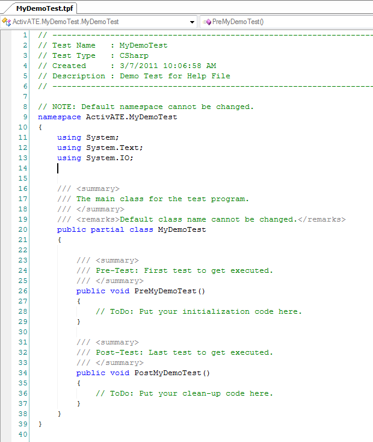

- From the File menu, click New Test
Program (or click the New Test Program button in the Standard toolbar).

- The New Test Program dialog appears as
shown below. Enter a name for the new test program in the Program Name
text box. The Description field is optional.

- A default directory is displayed
in the Directory text box. The new test program will be created in a
subdirectory (named after the test program) in the directory specified here.
If you would like to change this location, either type a valid path in the
text box or click the file browse button to browse and select the directory.
- Select the programming language that you would like to use for the test
program. The options are VBScript, CSharp, and VBDotNet. This
will be defaulted to the language that was selected last time a test program
was created.
- If you would like to create your test program from an existing template,
check the "Use Template" check box and select the template from the drop
down list. For information on creating templates, see the
Templates help topic.
- If you will not be using a globals
file, skip to step 6. Otherwise, to add a globals file to this test
program, you can choose either of the following options:
- To use
the
current globals file template, check the "Use existing Globals File
template" check box.
- To select an existing test
script file, enter the full path of the file in the Globals File text box or
click the file browse button to browse and select the file. If you
would like to designate this file as the new globals template, check the box
labeled "Set THIS globals as new template".
- The Pre-Test and Post-Test subroutine
names will automatically be filled in for you based on the program name you
enter. If you would like to change the default names, you may do so.
The Pre-Test subroutine is the first method to be executed when the test is run,
and the Post-Test is the last method to be executed after all other tests
have been completed.
- Click OK to finish or Cancel to exit
without creating a new test program.
- The following code demonstrates the
script that is auto-generated and displayed in the Script View window after the
new test program is created:

See Also
Adding a
New Group | Adding a New Test |
Running a Test Program
Back to Top
EADS North America Test and Services
Last updated on 10/29/10 by S. Lao